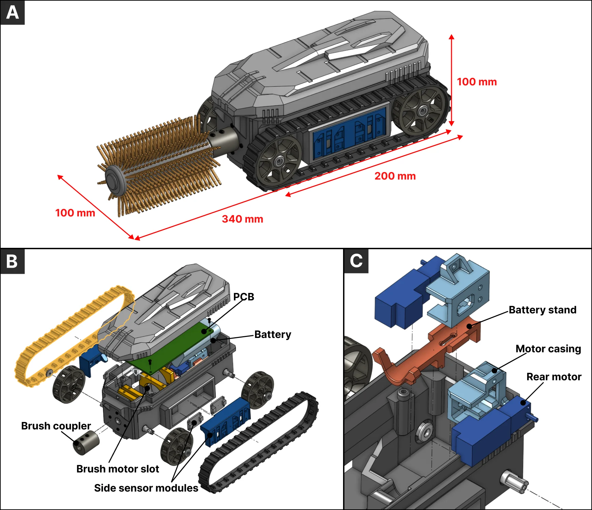
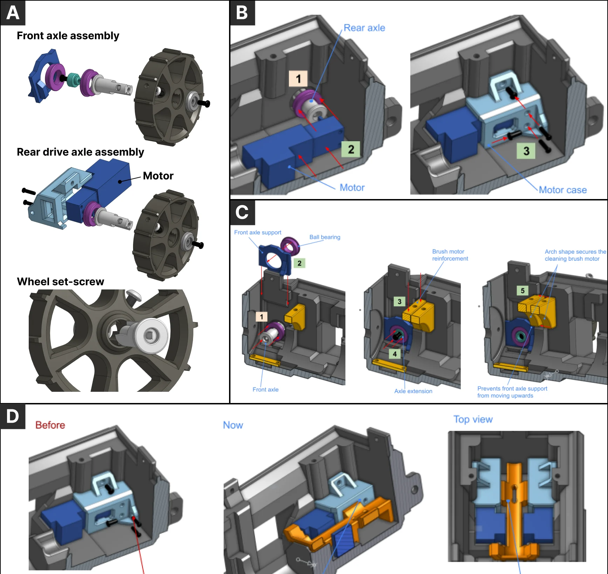
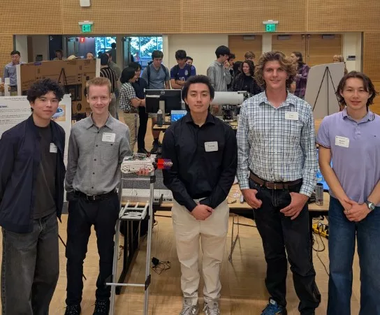
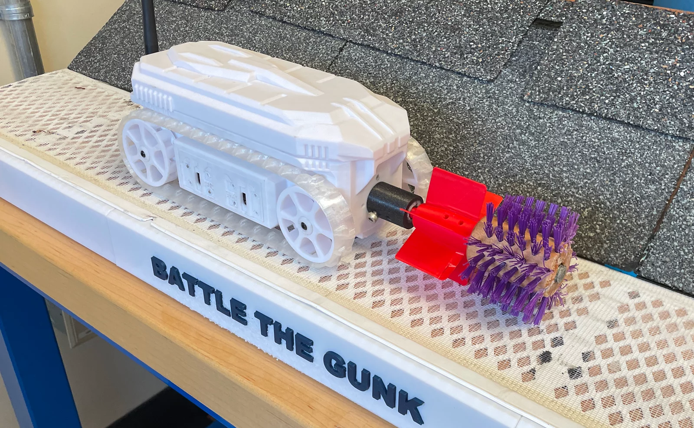
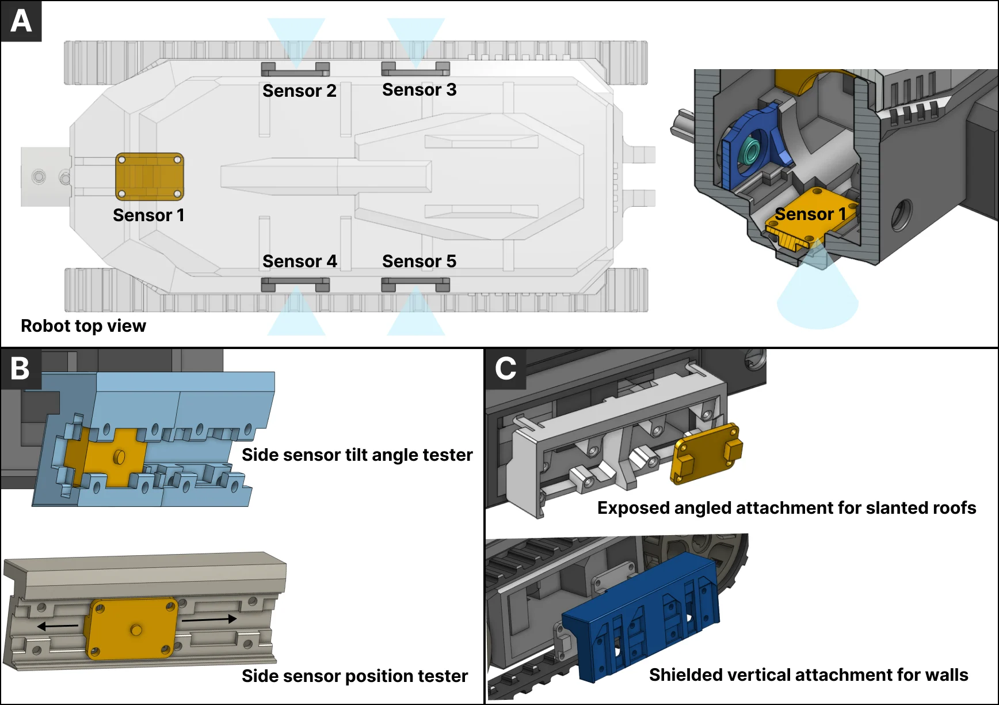
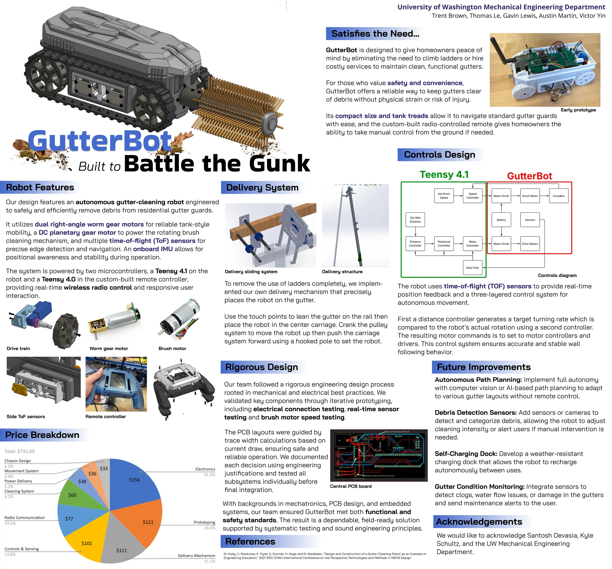
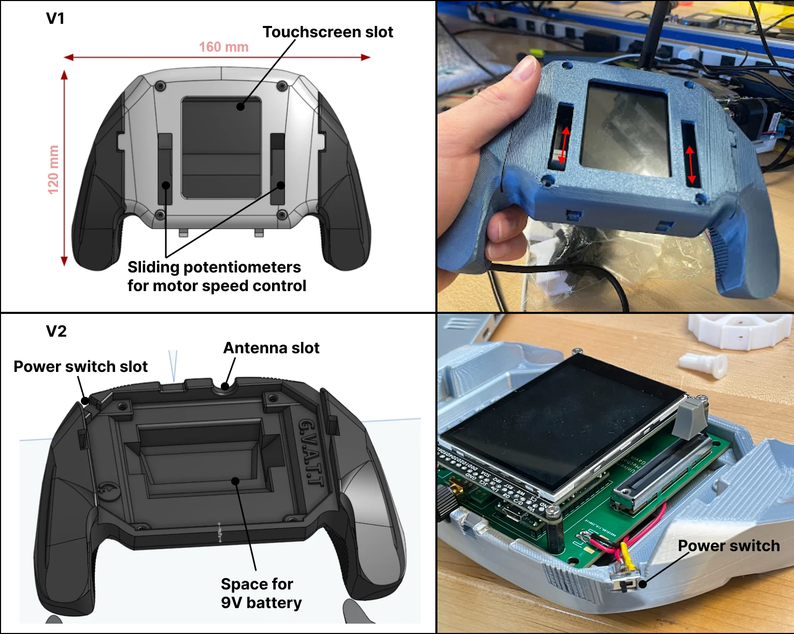

Senior Capstone: Autonomous Gutter Cleaning Robot
University of Washington · Jan ~ Jun 2025 · Team of 5
Skills
Overview
I worked on chassis CAD and controls testing for a compact, autonomous and radio-controllable robot that cleans out nasty Seattle rain gutter covers. It uses time-of-flight (ToF) sensors with a PID controller to stay centered while a front brush spins out debris, powered by 2 high gear-ratio DC motors that drive TPU tank treads.

Designing for testing in parallel
For the chassis and internals, I designed snap-fit modular parts that let us test and swap out subsystems without reprinting the chassis, cutting development time by about 2 weeks. This also helped us narrow down key dimensions early, with an expected weight, to calculate the required motor torque and power and speed up the electronics downselection.
A major milestone was designing a drivetrain assembly that properly constrained the wheel axles. This was a challenge because the compact width and spacing left little room, and the 2 tensioned TPU treads constantly pulled the wheels together. Knowing the axles would take a lot of lateral and vertical load, I used interference fits in the chassis for ball bearings and added slot-in supports. The rear motors are secured tightly by setbacks in the chassis and the orange battery holder, while the front axles use another set of bearings fitted in a blue tab, which is then secured by the front brush motor’s yellow arch locks. These interlocking designs meant we didn’t need any screws, which kept us sane as prototype issues came up.

On the topic of staying sane: the night before the expo demo, a teammate rushed the assembly and poked through the battery with the pins on the underside of the PCB above it, shorting the board entirely. Thankfully, we salvaged it using spare PCBs and a donated Teensy 4.1, but it was a great lesson in poka-yoke, which I’ve applied to my assembly designs ever since. Take a look at our exhausted demo-day faces.

Optimizing sensor position for closed-loop control
One challenge was deciding where the ToF sensors should point on the gutter cover, as there’s often no consistent vertical wall. I first designed swappable attachment configurations for the ToF sensors, which we used on a 2 m gutter test rig to find a suitable angle. We chose an angle that gave enough distance for the sensor’s minimum threshold and held consistent readings for an edge ~2 inches away, giving us enough warning before the robot got too close to the edge.

During operation, the main brush also changed the robot’s heading unpredictably depending on debris density. I extended the chassis to fit 2 ToF sensors on each side, to roughly estimate yaw from the difference in distance readings on the roof side of the robot. This gave us continuous distance readings, which I used to help develop a feedback controller for the differential-drive motors, letting us hold a constant heading.

